This document responds to the five points raised by PayAlly. Sections 1–4 describe the changes made to the website and where each wording now appears. Section 5 contains the requested purchase example: the customer journey, the order in the back office, and the Order Confirmation email and invoice the customer receives after payment.
All references to withdrawing, cashing out or transferring Balance have been removed from the website. Balance can only be topped up and used to pay for digital products on the platform; there is no withdrawal, payout or transfer function anywhere in the product or in the policies.
| Page | Change |
|---|---|
| /balance-terms | Rewritten. The former “Withdrawal of available Balance” section is replaced by “No cash-out, no transfer”. Eligibility, currency conversion, refunds, payment reversals, security, account closure and records no longer reference withdrawals. Account closure states that unused credits are not paid out in cash. |
| /terms | The Balance clause no longer offers withdrawal through customer support; it now carries the non-transferable-credits wording. The suspension clause and the account-verification clause no longer reference withdrawals. The Payment section states the card statement descriptor. |
| /privacy | “Balance and withdrawals” renamed to “Balance”, and the policy states that no payout instructions or third-party beneficiary data are processed, because credits cannot be withdrawn or transferred. |
| /refund-policy | The credits section states that credits cannot be withdrawn, cashed out, paid to a bank account or transferred. Where mandatory law or a confirmed technical / unauthorised-payment error requires a reimbursement, it goes to the original payment method only — never as cash or to a third party. |
| /pre-orders, /restricted-territories | Remaining withdrawal references replaced: refunded amounts return to Balance and stay usable for purchases. |
The required disclosure is shown before payment on the Balance top-up screen, on the checkout, and on the Balance card in the customer account:
Credits are non-transferable virtual credits usable only within this platform. They are not cryptocurrency, not tradable, and not redeemable for cash.
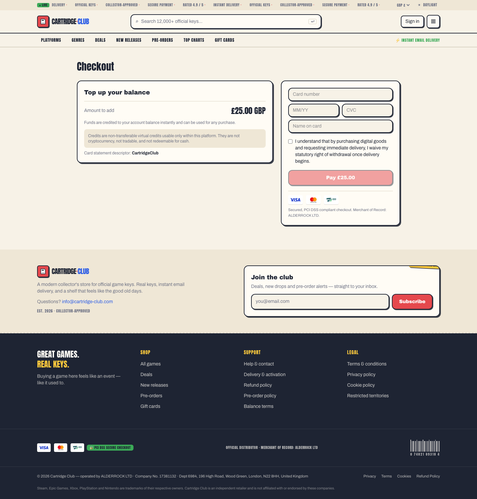
The Privacy Policy now sets a defined maximum retention period for every category of data, with automated monthly deletion, and states the backup retention explicitly. Periods follow UK and EU requirements.
| Data category | Retention |
|---|---|
| Account and profile data | 24 months after account closure or last interaction |
| Orders, invoices, Balance transactions, payment records | 6 years from the end of the financial year (Companies Act 2006 s.388, HMRC record-keeping); up to 10 years where an EU member state's VAT rules require it. Delivered keys are masked after 12 months |
| Customer support and complaint correspondence | 24 months after the ticket closes, or until a related dispute ends |
| Fraud, chargeback and dispute evidence | 6 years (limitation period and card-scheme dispute windows) |
| Security, access and technical logs | 12 months; 30 days for routine logs without a security event |
| Password reset / email verification tokens | 1 hour / 24 hours, deleted on use or expiry |
| Marketing and consent records | Until opt-out or 24 months without interaction; hashed suppression record kept while marketing operates; cookie consent 12 months |
| Analytics and cookie data | 13 months |
| Backups and disaster recovery copies | Encrypted, rolling 35-day cycle, automatically overwritten. Data deleted from live systems — including after an erasure request — disappears from backups within 35 days; during that window backups are restored only for disaster recovery |
The policy also covers legal holds: where an erasure request or an expiring retention period conflicts with a statutory obligation, an unresolved dispute, a live fraud investigation or a limitation period, processing is restricted instead of deleted, the data is deleted once the obligation ends, and the customer is told that this applies.
Both required elements appear on the payment screen, above the Pay button.
Card statement descriptor: CartridgeClub is shown in the payment panel and repeated in
the Seller & billing block (“The charge will appear on your card statement as
CartridgeClub”). It is also stated in the Terms, Payment section, and on the
Balance top-up screen.
A mandatory checkbox, unticked by default, must be accepted before payment can be submitted. It is shown to every customer, not only to EU/UK customers, and it is enforced both in the form and on the server — a request without the acknowledgement is rejected. The same acknowledgement is required for a Balance top-up.
I understand that by purchasing digital goods and requesting immediate delivery, I waive my statutory right of withdrawal once delivery begins.
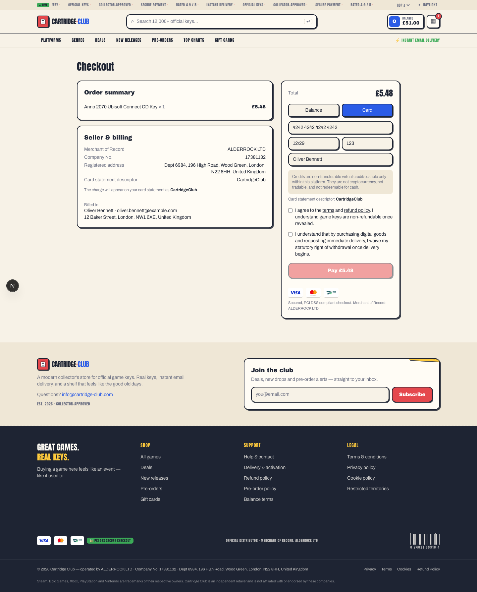
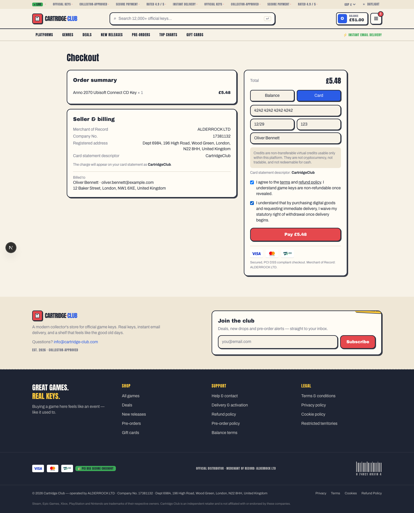
The Refund, Cancellation and Withdrawal Policy has been reviewed against each item requested and contains:
The screenshots below follow one order from the catalogue to the delivered key, then show the same order in the back office, and finally the Order Confirmation email and the PDF invoice the customer receives. The card number shown is the standard test number 4242 4242 4242 4242.
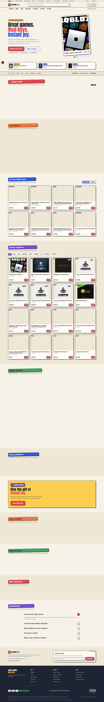
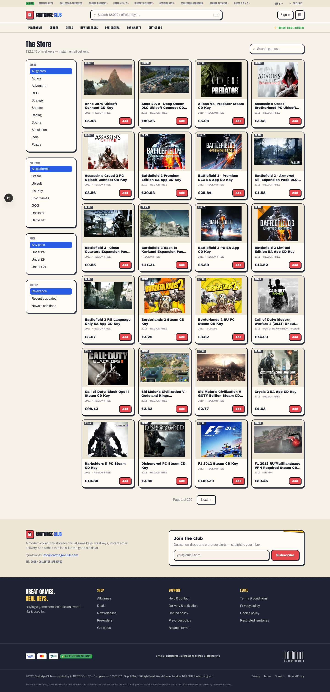
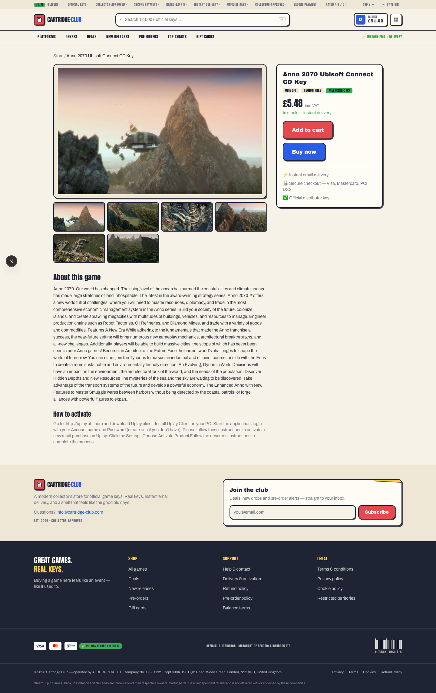
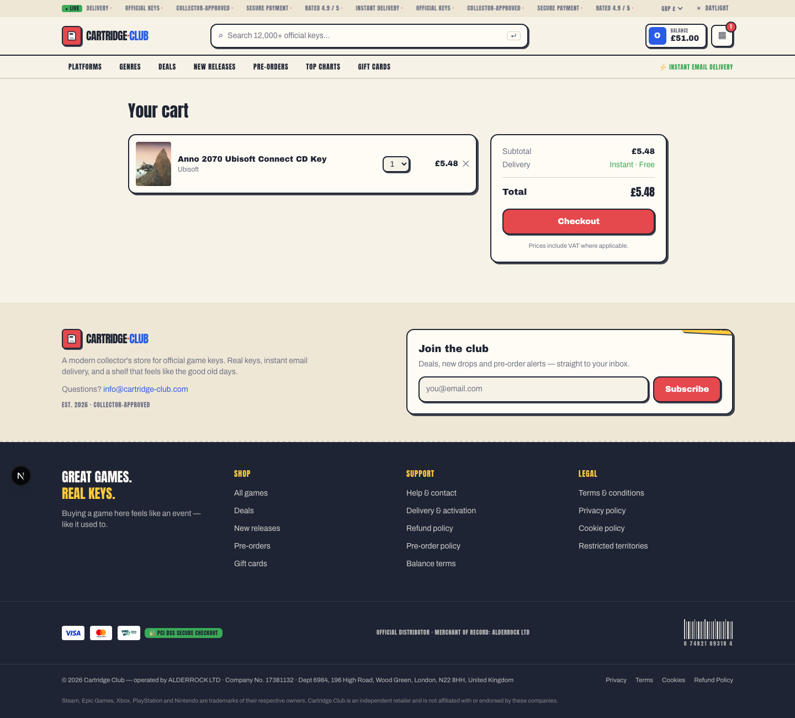
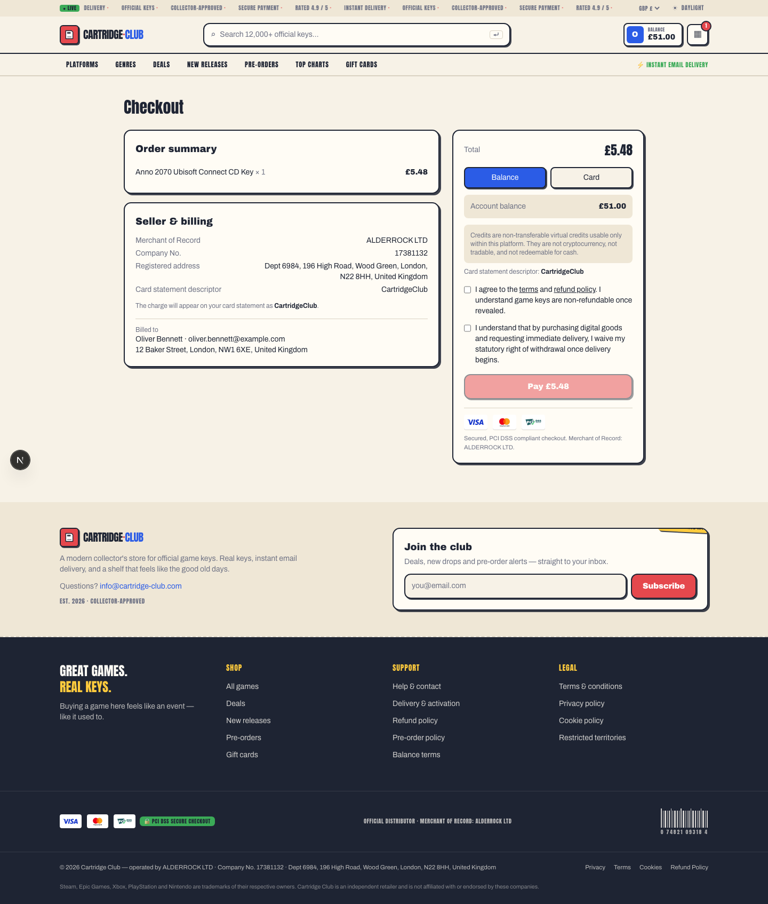
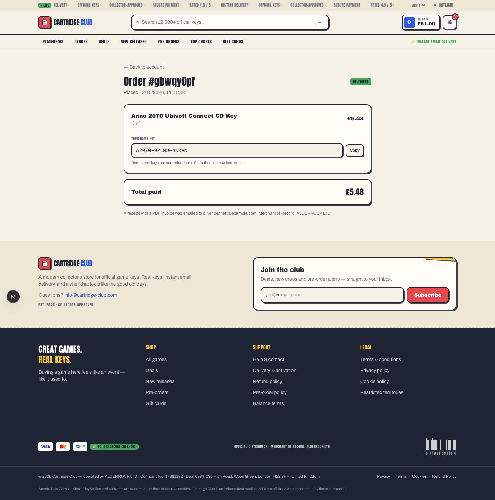
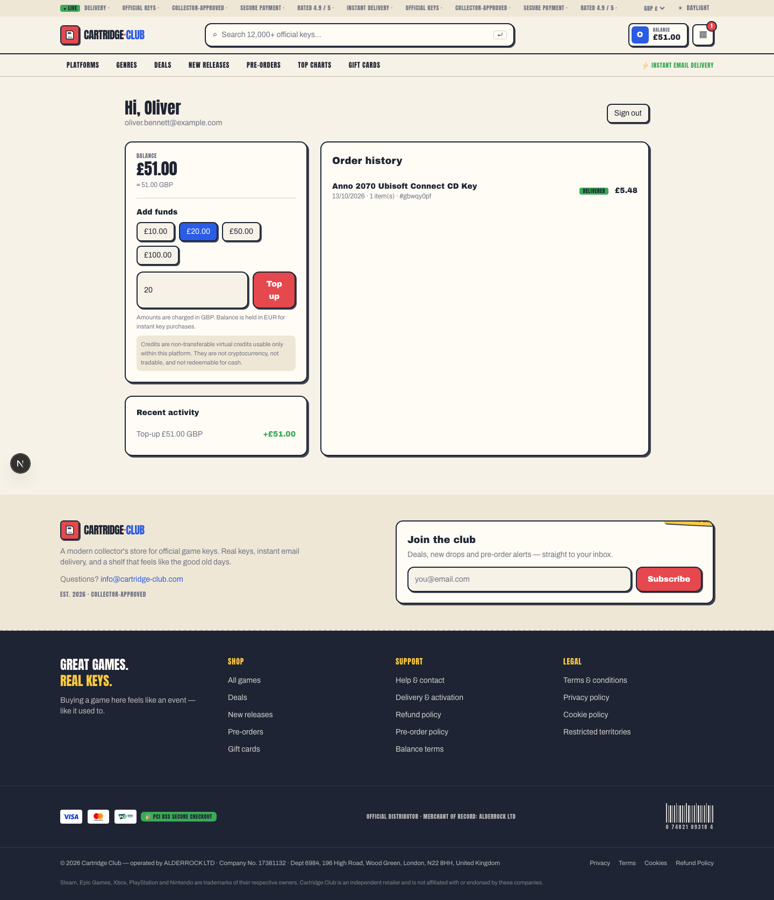
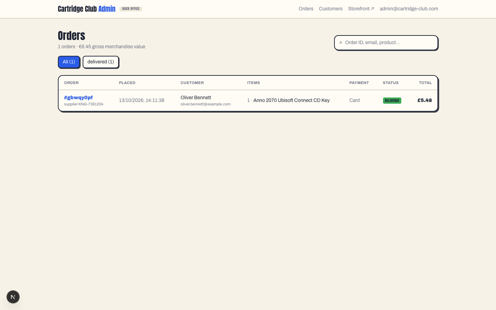
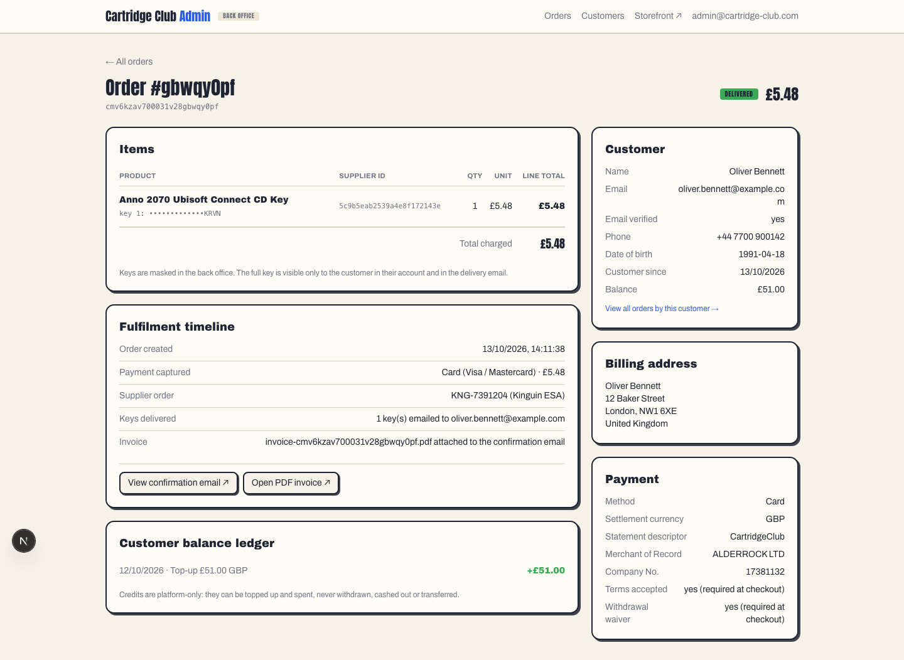
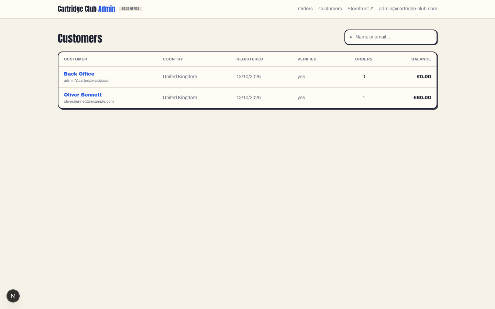
After payment the customer receives the confirmation email below with the key or keys, the total
paid, and the PDF invoice attached. Both files are included with this pack:
order-confirmation-email.html and invoice.pdf.
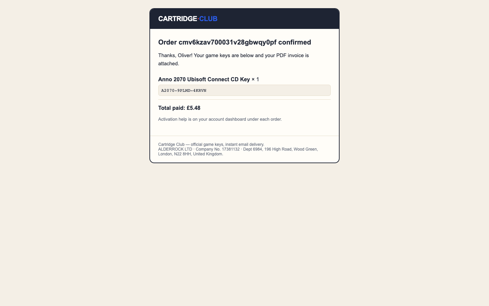